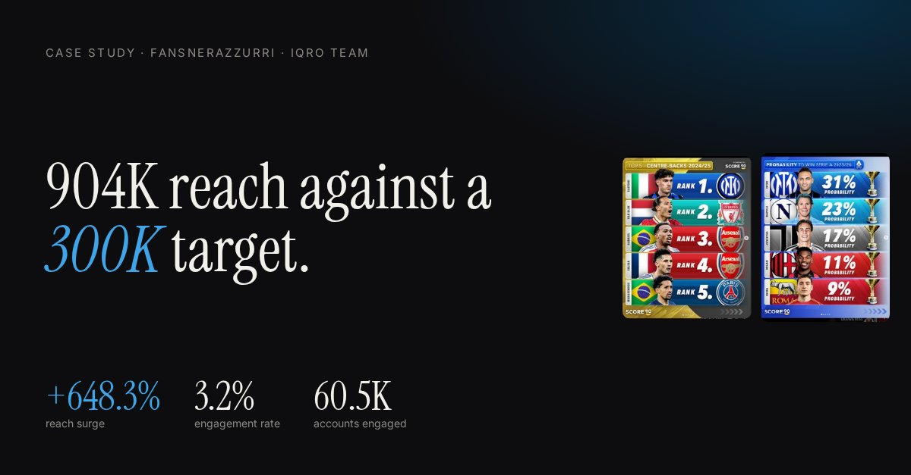

Motion & Graphic Designer · Busan, South Korea
I make brands move —
logo animations, intros
& social creatives.
Freelance since 2021 for businesses in Uzbekistan, now studying Global Business at Kyungsung University in Busan. Uzbek · English · Korean · Russian.
Selected work

Case study · Project Manager & team lead
Fansnerazzurri: 904K reach against a 300K target
Instagram performance campaign for an Inter Milan fan page — Online Reputation Management, Kyungsung University, 2025.
Read the case study →About
I'm Akhliyor (Ali) Abdulkhamidov — a designer who grew up in Uzbekistan and now lives in Busan.
I started doing graphic and motion design in 2021, first as a junior designer at Real Taxi, then freelance under the name Khamidov Gr, making logo animations, motion posters, channel intros and social creatives from client briefs. Today I'm a Grade 4 Global Business Administration student at Kyungsung University, which means I design with the business goal in mind: present the product so people want it.
After Effects · Photoshop · Canva · Typography · Motion graphics
Services
- Logo animationBring a static mark to life for intros, reels and ads.
- Motion graphicsAnimated maps, reveals and key visuals for launches and events.
- Social media creativesStatic and animated posts, campaign sets, promo posters.
- Channel introsYouTube, stream and brand openers.
Experience
- 2023 — NowKyungsung University, BusanB.A. Global Business Administration (Grade 4)
- 2022 — NowFreelance Graphic & Motion DesignerKhamidov Gr · self-employed
- 2022 — 2023English & IELTS TeacherLingo Master · part-time
- 2021 — 2022Junior Graphic DesignerReal Taxi · full-time
- 2020 — 2021Academic Support TeacherAT Language Arts · Fergana
Available for freelance & collaborations
Let's make something move.
abdulhamidovahliyor0222@gmail.comBusan, South Korea · © 2026 Akhliyor Abdulkhamidov